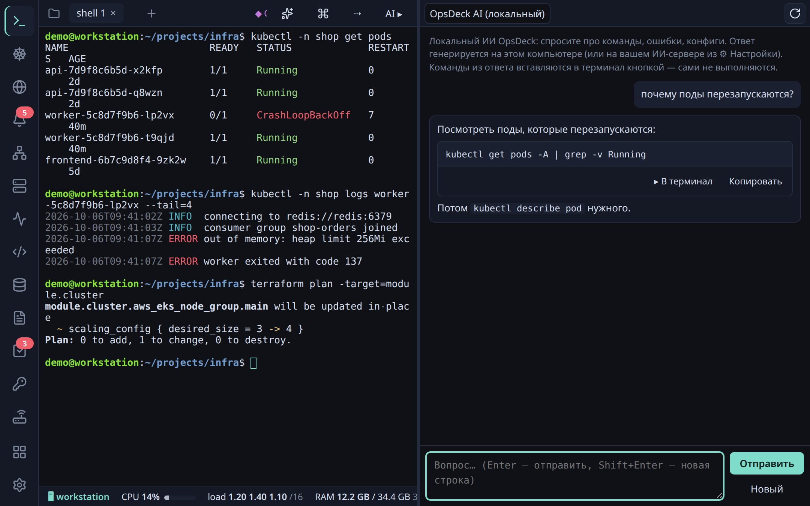

Работа в OpsDeck
Терминал

Терминал запускает обычный shell и поддерживает вкладки и разделённые панели. Команды оформляются блоками с кодом выхода и временем. Выделение или вывод блока можно скопировать, сохранить как сниппет или отправить AI. Ctrl+Shift+P открывает палитру команд, Ctrl+Shift+I — AI-панель, Ctrl+Shift+A отправляет выделение. Запись сессии включается кнопкой ⏺.
AI

Пошаговая настройка встроенной модели, внешнего сервера и OpenCode через JSON — в отдельном руководстве.
В ⚙ → Локальный ИИ выберите модель и нажмите Установить. После установки Ctrl+Shift+K создаёт команду по текстовому запросу; Вставить добавляет её в строку без запуска. Вместо встроенной модели можно задать OpenAI-совместимый сервер (Ollama, vLLM, LM Studio): адрес, модель и при необходимости API-ключ.
AI-панель может запускать установленные CLI-агенты Claude Code, Codex, Gemini, Aider или OpenCode. Для расследования включите модуль ИИ-агент, задайте уровни доступа хостам и включите Расследование в AI-панели. Каждый шаг с командой и выводом виден. Политика хоста определяет, можно ли выполнять изменения и требуется ли подтверждение.
Файлы, IDE и мониторинг

В IDE откройте папку проекта: дерево файлов, редактор, поиск Ctrl+Shift+F, git-панель и консоль работают в контексте выбранного проекта. Для .gitlab-ci.yml и GitHub Actions доступен граф пайплайна. Он разбирает локальные файлы, поэтому сведения сервера CI могут отсутствовать.
В Файлах на хостах выберите для каждой панели локальную машину или SSH-хост и переносите файлы стрелками. Хост → хост выполняется через scp -3. В Мониторинге хостов кнопка ＋ Хосты добавляет SSH-профили на доску с CPU, памятью, диском и аптаймом.
Заметки и задачи

Заметки хранятся обычными .md файлами в выбранной папке; можно подключить существующий Obsidian vault. Поддерживаются несколько хранилищ, дерево папок, теги и поиск. Задачи в заметках формата Obsidian Tasks собираются в общий список и календарь, сроки могут вызывать напоминания.
Настройки и перенос

В ⚙ → Экспорт… выберите части конфигурации для архива; Импорт… показывает его содержимое и восстанавливает выбранное. Пароли в архив не входят и вводятся заново. Kubeconfig по умолчанию не выбран, поскольку может содержать ключи доступа. Перед заменой импортируемых файлов OpsDeck делает резервные копии.
Окружения создаются через ⚙ → Окружения…. Каждое открывается в отдельном окне и хранит собственные подключения. Общими остаются AI-модели и, пока не изменена настройка окружения, папка заметок.